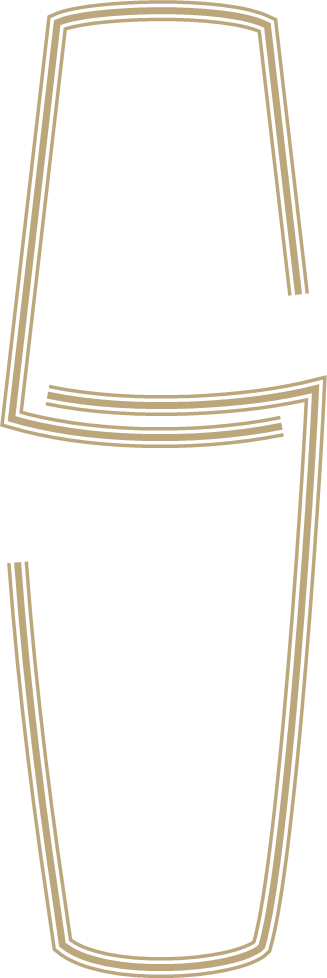

Glass That Stays Readable
One set of tokens, fonts and controls for every Saturday Portfolio project. Every surface on this page keeps at least 4.5:1 text contrast, in light and in dark.
Toggles and buttons
4 toggle typesShowing volume (9Lc).
Remembers the choice on this device. Auto follows the operating system.
One primary button per view.
Volume by quarter (9Lc)
Source: QuickBooks snapshot (13 Oct 2026). Volume in 9Lc.
Top markets (F26)
Data sits on glass-2| Market | Channel | Volume (9Lc) | v F25 |
|---|---|---|---|
| Spain | Direct | 8,412 | ▲ 22.1% |
| Philippines | PR | 6,950 | ▲ 61.0% |
| Indonesia | Direct | 4,203 | ▼ 4.8% |
| Singapore | PR | 3,877 | 0.0% |
Type roles
Instrument Serif and GeistLogo mark
Saturday skin only
Triple-line gold (print, menus)The two breaks in the shaker outline form an S. Keep clear space equal to the mark's width on every side. Never fill, stretch or recolour it outside the mark token and gold #BBA77B.
Colour tokens
Spacing and radius
4px grid
Radius
Nested corners: inner radius = outer radius minus the padding between them.
Caption rules
Do
Stock cover (months)
Uppercase label, 2 or 3 words, unit in brackets keeps its case.
Don't
Number of months of stock cover in the selected period (#)
Do
Peak = F26Q3 (14.9k 9Lc), up 53% v F25Q3.
Don't
Chart showing quarterly volume data
Do
F26Q2, C26Q1, FYTD, Oct'26
Don't
Q2, Q2 2026, Q2 of F26
Do
▼ 4.8%v F25 (4,415)
Don't
4.8% colour alone, no base
Do
Spain, Direct, F26Q2
Don't
Spain · Direct · F26Q2
Saturday Signature v1.0.3. Fonts: Instrument Serif, Geist, Geist Mono, Libre Baskerville (SIL Open Font License).